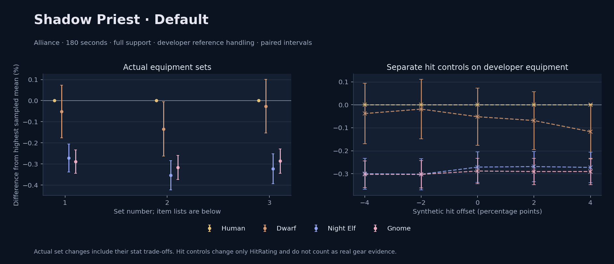

Alliance · Human / Dwarf / Night Elf / Gnome

No pet or guardian appears in the reference combat metrics. Reference: Human, developer equipment, 180 seconds and full support. Pet choices remain those of the developer build.
WoWSims developer · Shadow Testing
Unmeasured proc rates: [{"source": "enchant", "id": 8217, "name": "Enchant Weapon - Revelation", "kind": "chance", "origin": "unknown"}]
180 seconds, full support and original developer references. Hit below is generic sheet melee / spell hit; school and talent bonuses can be attached directly to spells.
| Race | DPS | Gap and interval | Generic hit | Replay |
|---|---|---|---|---|
| Human | 793.56 | +0.000% ± 0.000 | 2.0% / 2.0% | Native input · Website JSON |
| Dwarf | 793.15 | -0.052% ± 0.124 | 3.0% / 3.0% | Native input · Website JSON |
| Night Elf | 791.41 | -0.271% ± 0.066 | 2.0% / 2.0% | Native input · Website JSON |
| Gnome | 791.28 | -0.288% ± 0.056 | 2.0% / 2.0% | Native input · Website JSON |
| Slot | Item | ID | Enchant |
|---|---|---|---|
| Head | Eternal Crown | 14332 | |
| Neck | Chains of the Lich | 23125 | |
| Shoulder | Felcloth Shoulders | 14112 | |
| Back | Arcanoweave Cloak | 272411 | |
| Chest | Robe of Winter Night | 14136 | Mystic Rugged Armor Kit |
| Wrist | Master's Bracers | 10248 | Enchant Bracer - Superior Intellect |
| Hands | Felcloth Gloves | 18407 | Mystic Rugged Armor Kit |
| Waist | Master's Belt | 10255 | |
| Legs | Master's Leggings | 10252 | Mystic Rugged Armor Kit |
| Feet | Master's Boots | 10247 | Mystic Rugged Armor Kit |
| Ring 1 | Blessed Band of Light | 272407 | |
| Ring 2 | Brilliant Watcher's Signet | 275973 | |
| Trinket 1 | Weakness Analyzer | 272438 | |
| Trinket 2 | Jewel of the Guard Captain | 270225 | |
| Main hand | Verimonde's Last Resort | 22688 | Enchant Weapon - Revelation |
| Off hand | Master's Rod | 15942 | |
| Ranged / relic | Lunar Wand | 15283 |
Published ranked alternatives · Published pre-raid
Recorded source replacements: [{"slot": "feet", "from": 11822, "to": 275606, "publishedAlternativeRank": 1, "publishedEpDelta": -1.6, "reason": "First published alternative compatible with the current WoWSims database, class, faction and occupied slots."}]
Unmeasured proc rates: [{"source": "item", "id": 2243, "name": "Hand of Edward the Odd", "kind": "ppm", "origin": "vanilla"}]
180 seconds, full support and original developer references. Hit below is generic sheet melee / spell hit; school and talent bonuses can be attached directly to spells.
| Race | DPS | Gap and interval | Generic hit | Replay |
|---|---|---|---|---|
| Human | 782.99 | +0.000% ± 0.000 | 2.0% / 2.0% | Native input · Website JSON |
| Dwarf | 781.94 | -0.134% ± 0.129 | 3.0% / 3.0% | Native input · Website JSON |
| Gnome | 780.51 | -0.316% ± 0.057 | 2.0% / 2.0% | Native input · Website JSON |
| Night Elf | 780.23 | -0.353% ± 0.070 | 2.0% / 2.0% | Native input · Website JSON |
| Slot | Item | ID | Enchant |
|---|---|---|---|
| Head | Felcloth Hood | 14111 | Arcanum of Focus |
| Neck | Archlight Talisman | 15856 | Enchant Necklace - Spell Power |
| Shoulder | Mantle of the Timbermaw | 19050 | |
| Back | Arcanoweave Cloak | 272411 | |
| Chest | Robe of Winter Night | 14136 | Mystic Rugged Armor Kit |
| Wrist | Runecloth Cuffs | 254123 | Enchant Bracer - Greater Spellpower |
| Hands | Gloves of Spell Mastery | 14146 | Enchant Gloves - Minor Haste |
| Waist | Belt of the Archmage | 18405 | |
| Legs | Felcloth Pants | 14107 | Arcanum of Focus |
| Feet | Venomspew Footpads | 275606 | Mystic Rugged Armor Kit |
| Ring 1 | Blessed Band of Light | 272407 | |
| Ring 2 | Maiden's Circle | 13001 | |
| Trinket 1 | Weakness Analyzer | 272438 | |
| Trinket 2 | Uther's Strength | 11302 | |
| Main hand | Hand of Edward the Odd | 2243 | |
| Off hand | Spirit of Aquementas | 11904 | Enchant Off-Hand - Superior Intellect |
| Ranged / relic | Greater Eternal Wand | 249237 |
Published ranked alternatives · Published pre-raid
Recorded source replacements: [{"slot": "shoulder", "from": 227808, "to": 19050, "publishedAlternativeRank": 1, "publishedEpDelta": -10.5, "reason": "First published alternative compatible with the current WoWSims database, class, faction and occupied slots."}, {"slot": "waist", "from": 228190, "to": 18405, "publishedAlternativeRank": 1, "publishedEpDelta": -5.1, "reason": "First published alternative compatible with the current WoWSims database, class, faction and occupied slots."}, {"slot": "feet", "from": 11822, "to": 254113, "publishedAlternativeRank": 1, "publishedEpDelta": -0.2, "reason": "First published alternative compatible with the current WoWSims database, class, faction and occupied slots."}]
Unmeasured proc rates: [{"source": "item", "id": 2243, "name": "Hand of Edward the Odd", "kind": "ppm", "origin": "vanilla"}]
180 seconds, full support and original developer references. Hit below is generic sheet melee / spell hit; school and talent bonuses can be attached directly to spells.
| Race | DPS | Gap and interval | Generic hit | Replay |
|---|---|---|---|---|
| Human | 787.66 | +0.000% ± 0.000 | 2.9% / 2.9% | Native input · Website JSON |
| Dwarf | 787.46 | -0.026% ± 0.127 | 3.9% / 3.9% | Native input · Website JSON |
| Gnome | 785.41 | -0.286% ± 0.058 | 2.9% / 2.9% | Native input · Website JSON |
| Night Elf | 785.12 | -0.323% ± 0.070 | 2.9% / 2.9% | Native input · Website JSON |
| Slot | Item | ID | Enchant |
|---|---|---|---|
| Head | Felcloth Hood | 14111 | Arcanum of Focus |
| Neck | Archlight Talisman | 15856 | Enchant Necklace - Spell Power |
| Shoulder | Mantle of the Timbermaw | 19050 | |
| Back | Arcanoweave Cloak | 272411 | |
| Chest | Robe of Winter Night | 14136 | Mystic Rugged Armor Kit |
| Wrist | Netherpearl Cuffs | 254067 | Enchant Bracer - Greater Spellpower |
| Hands | Gloves of Spell Mastery | 14146 | Enchant Gloves - Minor Haste |
| Waist | Belt of the Archmage | 18405 | |
| Legs | Felcloth Pants | 14107 | Arcanum of Focus |
| Feet | Black Sandals | 254113 | Mystic Rugged Armor Kit |
| Ring 1 | Blessed Band of Light | 272407 | |
| Ring 2 | Maiden's Circle | 13001 | |
| Trinket 1 | Weakness Analyzer | 272438 | |
| Trinket 2 | Frozen Heart of the Mountain | 249469 | |
| Main hand | Hand of Edward the Odd | 2243 | |
| Off hand | Spirit of Aquementas | 11904 | Enchant Off-Hand - Superior Intellect |
| Ranged / relic | Brilliant Wand | 249385 |
The same declared pool is available to every race. Each race keeps its best validation-sample set with its screening-selected racial policy. Separate samples confirm that choice, with fresh precision samples near the practical-loss boundary. Gaps use the highest sampled mean under that same duration, support and reference treatment as their reference. A zero reference gap does not certify a race; the main matrix also allows uncertainty in the leader.
| Pool | Seconds | Support | References | Race | DPS | Gap and interval | Racial policies / mana | Selected set | Generic hit: melee / spell | Replay |
|---|---|---|---|---|---|---|---|---|---|---|
| published-pre-raid | 60 | full | developer | Night Elf | 785.02 | +0.000% ± 0.0005,000 iterations | developer / developer / developerMana waits 0.0s | published-priest-shadow-alliance-606f98eca554d990 | 2.9% / 2.9% | Input · Result · Stats |
| published-pre-raid | 60 | full | developer | Human | 778.60 | -0.817% ± 0.0565,000 iterations | developer / developer / developerMana waits 0.0s | published-priest-shadow-alliance-606f98eca554d990 | 2.9% / 2.9% | Input · Result · Stats |
| published-pre-raid | 60 | full | developer | Gnome | 778.24 | -0.863% ± 0.0485,000 iterations | developer / developer / developerMana waits 0.0s | published-priest-shadow-alliance-606f98eca554d990 | 2.9% / 2.9% | Input · Result · Stats |
| published-pre-raid | 60 | full | developer | Dwarf | 777.94 | -0.902% ± 0.0865,000 iterations | developer / developer / developerMana waits 0.0s | published-priest-shadow-alliance-606f98eca554d990 | 3.9% / 3.9% | Input · Result · Stats |
| published-pre-raid | 60 | full | explicit | Night Elf | 785.02 | +0.000% ± 0.0005,000 iterations | developer / developer / developerMana waits 0.0s | published-priest-shadow-alliance-606f98eca554d990 | 2.9% / 2.9% | Input · Result · Stats |
| published-pre-raid | 60 | full | explicit | Human | 778.60 | -0.817% ± 0.0565,000 iterations | developer / developer / developerMana waits 0.0s | published-priest-shadow-alliance-606f98eca554d990 | 2.9% / 2.9% | Input · Result · Stats |
| published-pre-raid | 60 | full | explicit | Gnome | 778.24 | -0.863% ± 0.0485,000 iterations | developer / developer / developerMana waits 0.0s | published-priest-shadow-alliance-606f98eca554d990 | 2.9% / 2.9% | Input · Result · Stats |
| published-pre-raid | 60 | full | explicit | Dwarf | 777.94 | -0.902% ± 0.0865,000 iterations | developer / developer / developerMana waits 0.0s | published-priest-shadow-alliance-606f98eca554d990 | 3.9% / 3.9% | Input · Result · Stats |
| published-pre-raid | 60 | self | developer | Night Elf | 687.83 | +0.000% ± 0.0005,000 iterations | developer / developer / developerMana waits 0.0s | published-priest-shadow-alliance-606f98eca554d990 | 2.9% / 2.9% | Input · Result · Stats |
| published-pre-raid | 60 | self | developer | Human | 682.37 | -0.794% ± 0.0585,000 iterations | developer / developer / developerMana waits 0.0s | published-priest-shadow-alliance-606f98eca554d990 | 2.9% / 2.9% | Input · Result · Stats |
| published-pre-raid | 60 | self | developer | Gnome | 681.60 | -0.907% ± 0.0505,000 iterations | developer / developer / developerMana waits 0.0s | published-priest-shadow-alliance-606f98eca554d990 | 2.9% / 2.9% | Input · Result · Stats |
| published-pre-raid | 60 | self | developer | Dwarf | 681.50 | -0.920% ± 0.0865,000 iterations | developer / developer / developerMana waits 0.0s | published-priest-shadow-alliance-606f98eca554d990 | 3.9% / 3.9% | Input · Result · Stats |
| published-pre-raid | 60 | self | explicit | Night Elf | 687.83 | +0.000% ± 0.0005,000 iterations | developer / developer / developerMana waits 0.0s | published-priest-shadow-alliance-606f98eca554d990 | 2.9% / 2.9% | Input · Result · Stats |
| published-pre-raid | 60 | self | explicit | Human | 682.37 | -0.794% ± 0.0585,000 iterations | developer / developer / developerMana waits 0.0s | published-priest-shadow-alliance-606f98eca554d990 | 2.9% / 2.9% | Input · Result · Stats |
| published-pre-raid | 60 | self | explicit | Gnome | 681.60 | -0.907% ± 0.0505,000 iterations | developer / developer / developerMana waits 0.0s | published-priest-shadow-alliance-606f98eca554d990 | 2.9% / 2.9% | Input · Result · Stats |
| published-pre-raid | 60 | self | explicit | Dwarf | 681.50 | -0.920% ± 0.0865,000 iterations | developer / developer / developerMana waits 0.0s | published-priest-shadow-alliance-606f98eca554d990 | 3.9% / 3.9% | Input · Result · Stats |
| published-pre-raid | 180 | full | developer | Human | 787.05 | +0.000% ± 0.0005,000 iterations | developer / developer / developerMana waits 0.0s | published-priest-shadow-alliance-606f98eca554d990 | 2.9% / 2.9% | Input · Result · Stats · Website JSON |
| published-pre-raid | 180 | full | developer | Dwarf | 786.00 | -0.133% ± 0.0575,000 iterations | developer / developer / developerMana waits 0.0s | published-priest-shadow-alliance-606f98eca554d990 | 3.9% / 3.9% | Input · Result · Stats · Website JSON |
| published-pre-raid | 180 | full | developer | Gnome | 784.61 | -0.310% ± 0.0265,000 iterations | developer / developer / developerMana waits 0.0s | published-priest-shadow-alliance-606f98eca554d990 | 2.9% / 2.9% | Input · Result · Stats · Website JSON |
| published-pre-raid | 180 | full | developer | Night Elf | 784.19 | -0.363% ± 0.0325,000 iterations | developer / developer / developerMana waits 0.0s | published-priest-shadow-alliance-606f98eca554d990 | 2.9% / 2.9% | Input · Result · Stats · Website JSON |
| published-pre-raid | 180 | full | explicit | Human | 787.05 | +0.000% ± 0.0005,000 iterations | developer / developer / developerMana waits 0.0s | published-priest-shadow-alliance-606f98eca554d990 | 2.9% / 2.9% | Input · Result · Stats |
| published-pre-raid | 180 | full | explicit | Dwarf | 786.00 | -0.133% ± 0.0575,000 iterations | developer / developer / developerMana waits 0.0s | published-priest-shadow-alliance-606f98eca554d990 | 3.9% / 3.9% | Input · Result · Stats |
| published-pre-raid | 180 | full | explicit | Gnome | 784.61 | -0.310% ± 0.0265,000 iterations | developer / developer / developerMana waits 0.0s | published-priest-shadow-alliance-606f98eca554d990 | 2.9% / 2.9% | Input · Result · Stats |
| published-pre-raid | 180 | full | explicit | Night Elf | 784.19 | -0.363% ± 0.0325,000 iterations | developer / developer / developerMana waits 0.0s | published-priest-shadow-alliance-606f98eca554d990 | 2.9% / 2.9% | Input · Result · Stats |
| published-pre-raid | 180 | self | developer | Human | 685.03 | +0.000% ± 0.00020,000 iterations | developer / developer / developerMana waits 0.0s | published-priest-shadow-alliance-606f98eca554d990 | 2.9% / 2.9% | Input · Result · Stats |
| published-pre-raid | 180 | self | developer | Dwarf | 684.11 | -0.134% ± 0.02820,000 iterations | developer / developer / developerMana waits 0.1s | published-priest-shadow-alliance-606f98eca554d990 | 3.9% / 3.9% | Input · Result · Stats |
| published-pre-raid | 180 | self | developer | Gnome | 682.66 | -0.347% ± 0.01220,000 iterations | developer / developer / developerMana waits 0.0s | published-priest-shadow-alliance-606f98eca554d990 | 2.9% / 2.9% | Input · Result · Stats |
| published-pre-raid | 180 | self | developer | Night Elf | 682.43 | -0.380% ± 0.01520,000 iterations | developer / developer / developerMana waits 0.1s | published-priest-shadow-alliance-606f98eca554d990 | 2.9% / 2.9% | Input · Result · Stats |
| published-pre-raid | 180 | self | explicit | Human | 685.03 | +0.000% ± 0.00020,000 iterations | developer / developer / developerMana waits 0.0s | published-priest-shadow-alliance-606f98eca554d990 | 2.9% / 2.9% | Input · Result · Stats |
| published-pre-raid | 180 | self | explicit | Dwarf | 684.11 | -0.134% ± 0.02820,000 iterations | developer / developer / developerMana waits 0.1s | published-priest-shadow-alliance-606f98eca554d990 | 3.9% / 3.9% | Input · Result · Stats |
| published-pre-raid | 180 | self | explicit | Gnome | 682.66 | -0.347% ± 0.01220,000 iterations | developer / developer / developerMana waits 0.0s | published-priest-shadow-alliance-606f98eca554d990 | 2.9% / 2.9% | Input · Result · Stats |
| published-pre-raid | 180 | self | explicit | Night Elf | 682.43 | -0.380% ± 0.01520,000 iterations | developer / developer / developerMana waits 0.1s | published-priest-shadow-alliance-606f98eca554d990 | 2.9% / 2.9% | Input · Result · Stats |
| published-pre-raid | 300 | full | developer | Human | 790.47 | +0.000% ± 0.00020,000 iterations | developer / developer / developerMana waits 0.0s | published-priest-shadow-alliance-606f98eca554d990 | 2.9% / 2.9% | Input · Result · Stats |
| published-pre-raid | 300 | full | developer | Dwarf | 788.85 | -0.205% ± 0.02520,000 iterations | developer / developer / developerMana waits 0.0s | published-priest-shadow-alliance-606f98eca554d990 | 3.9% / 3.9% | Input · Result · Stats |
| published-pre-raid | 300 | full | developer | Night Elf | 788.84 | -0.205% ± 0.01320,000 iterations | developer / developer / developerMana waits 0.0s | published-priest-shadow-alliance-606f98eca554d990 | 2.9% / 2.9% | Input · Result · Stats |
| published-pre-raid | 300 | full | developer | Gnome | 787.49 | -0.376% ± 0.01120,000 iterations | developer / developer / developerMana waits 0.0s | published-priest-shadow-alliance-606f98eca554d990 | 2.9% / 2.9% | Input · Result · Stats |
| published-pre-raid | 300 | full | explicit | Human | 790.47 | +0.000% ± 0.00020,000 iterations | developer / developer / developerMana waits 0.0s | published-priest-shadow-alliance-606f98eca554d990 | 2.9% / 2.9% | Input · Result · Stats |
| published-pre-raid | 300 | full | explicit | Dwarf | 788.85 | -0.205% ± 0.02520,000 iterations | developer / developer / developerMana waits 0.0s | published-priest-shadow-alliance-606f98eca554d990 | 3.9% / 3.9% | Input · Result · Stats |
| published-pre-raid | 300 | full | explicit | Night Elf | 788.84 | -0.205% ± 0.01320,000 iterations | developer / developer / developerMana waits 0.0s | published-priest-shadow-alliance-606f98eca554d990 | 2.9% / 2.9% | Input · Result · Stats |
| published-pre-raid | 300 | full | explicit | Gnome | 787.49 | -0.376% ± 0.01120,000 iterations | developer / developer / developerMana waits 0.0s | published-priest-shadow-alliance-606f98eca554d990 | 2.9% / 2.9% | Input · Result · Stats |
| published-pre-raid | 300 | self | developer | Human | 639.73 | +0.000% ± 0.00020,000 iterations | developer / developer / developerMana waits 43.1s | published-priest-shadow-alliance-606f98eca554d990 | 2.9% / 2.9% | Input · Result · Stats |
| published-pre-raid | 300 | self | developer | Gnome | 639.01 | -0.112% ± 0.02120,000 iterations | developer / developer / developerMana waits 40.3s | published-priest-shadow-alliance-606f98eca554d990 | 2.9% / 2.9% | Input · Result · Stats |
| published-pre-raid | 300 | self | developer | Night Elf | 629.58 | -1.586% ± 0.02420,000 iterations | developer / developer / developerMana waits 49.0s | published-priest-shadow-alliance-606f98eca554d990 | 2.9% / 2.9% | Input · Result · Stats |
| published-pre-raid | 300 | self | developer | Dwarf | 629.25 | -1.639% ± 0.03320,000 iterations | developer / developer / developerMana waits 48.8s | published-priest-shadow-alliance-606f98eca554d990 | 3.9% / 3.9% | Input · Result · Stats |
| published-pre-raid | 300 | self | explicit | Human | 639.73 | +0.000% ± 0.00020,000 iterations | developer / developer / developerMana waits 43.1s | published-priest-shadow-alliance-606f98eca554d990 | 2.9% / 2.9% | Input · Result · Stats |
| published-pre-raid | 300 | self | explicit | Gnome | 639.01 | -0.112% ± 0.02120,000 iterations | developer / developer / developerMana waits 40.3s | published-priest-shadow-alliance-606f98eca554d990 | 2.9% / 2.9% | Input · Result · Stats |
| published-pre-raid | 300 | self | explicit | Night Elf | 629.58 | -1.586% ± 0.02420,000 iterations | developer / developer / developerMana waits 49.0s | published-priest-shadow-alliance-606f98eca554d990 | 2.9% / 2.9% | Input · Result · Stats |
| published-pre-raid | 300 | self | explicit | Dwarf | 629.25 | -1.639% ± 0.03320,000 iterations | developer / developer / developerMana waits 48.8s | published-priest-shadow-alliance-606f98eca554d990 | 3.9% / 3.9% | Input · Result · Stats |
| developer-reference | 60 | full | developer | Night Elf | 803.31 | +0.000% ± 0.0005,000 iterations | developer / developer / developerMana waits 0.0s | developer | 2.0% / 2.0% | Input · Result · Stats |
| developer-reference | 60 | full | developer | Human | 797.38 | -0.738% ± 0.0585,000 iterations | developer / developer / developerMana waits 0.0s | developer | 2.0% / 2.0% | Input · Result · Stats |
| developer-reference | 60 | full | developer | Gnome | 796.89 | -0.800% ± 0.0495,000 iterations | developer / developer / developerMana waits 0.0s | developer | 2.0% / 2.0% | Input · Result · Stats |
| developer-reference | 60 | full | developer | Dwarf | 796.61 | -0.835% ± 0.0875,000 iterations | developer / developer / developerMana waits 0.0s | developer | 3.0% / 3.0% | Input · Result · Stats |
| developer-reference | 60 | full | explicit | Night Elf | 803.31 | +0.000% ± 0.0005,000 iterations | developer / developer / developerMana waits 0.0s | developer | 2.0% / 2.0% | Input · Result · Stats |
| developer-reference | 60 | full | explicit | Human | 797.38 | -0.738% ± 0.0585,000 iterations | developer / developer / developerMana waits 0.0s | developer | 2.0% / 2.0% | Input · Result · Stats |
| developer-reference | 60 | full | explicit | Gnome | 796.89 | -0.800% ± 0.0495,000 iterations | developer / developer / developerMana waits 0.0s | developer | 2.0% / 2.0% | Input · Result · Stats |
| developer-reference | 60 | full | explicit | Dwarf | 796.61 | -0.835% ± 0.0875,000 iterations | developer / developer / developerMana waits 0.0s | developer | 3.0% / 3.0% | Input · Result · Stats |
| developer-reference | 60 | self | developer | Night Elf | 705.63 | +0.000% ± 0.0005,000 iterations | developer / developer / developerMana waits 0.0s | developer | 2.0% / 2.0% | Input · Result · Stats |
| developer-reference | 60 | self | developer | Human | 700.24 | -0.765% ± 0.0595,000 iterations | developer / developer / developerMana waits 0.0s | developer | 2.0% / 2.0% | Input · Result · Stats |
| developer-reference | 60 | self | developer | Gnome | 699.92 | -0.810% ± 0.0495,000 iterations | developer / developer / developerMana waits 0.0s | developer | 2.0% / 2.0% | Input · Result · Stats |
| developer-reference | 60 | self | developer | Dwarf | 699.89 | -0.814% ± 0.0845,000 iterations | developer / developer / developerMana waits 0.0s | developer | 3.0% / 3.0% | Input · Result · Stats |
| developer-reference | 60 | self | explicit | Night Elf | 705.63 | +0.000% ± 0.0005,000 iterations | developer / developer / developerMana waits 0.0s | developer | 2.0% / 2.0% | Input · Result · Stats |
| developer-reference | 60 | self | explicit | Human | 700.24 | -0.765% ± 0.0595,000 iterations | developer / developer / developerMana waits 0.0s | developer | 2.0% / 2.0% | Input · Result · Stats |
| developer-reference | 60 | self | explicit | Gnome | 699.92 | -0.810% ± 0.0495,000 iterations | developer / developer / developerMana waits 0.0s | developer | 2.0% / 2.0% | Input · Result · Stats |
| developer-reference | 60 | self | explicit | Dwarf | 699.89 | -0.814% ± 0.0845,000 iterations | developer / developer / developerMana waits 0.0s | developer | 3.0% / 3.0% | Input · Result · Stats |
| developer-reference | 180 | full | developer | Human | 793.04 | +0.000% ± 0.0005,000 iterations | developer / developer / developerMana waits 0.0s | developer | 2.0% / 2.0% | Input · Result · Stats · Website JSON |
| developer-reference | 180 | full | developer | Dwarf | 792.41 | -0.078% ± 0.0565,000 iterations | developer / developer / developerMana waits 0.0s | developer | 3.0% / 3.0% | Input · Result · Stats · Website JSON |
| developer-reference | 180 | full | developer | Night Elf | 790.85 | -0.276% ± 0.0305,000 iterations | developer / developer / developerMana waits 0.0s | developer | 2.0% / 2.0% | Input · Result · Stats · Website JSON |
| developer-reference | 180 | full | developer | Gnome | 790.70 | -0.295% ± 0.0265,000 iterations | developer / developer / developerMana waits 0.0s | developer | 2.0% / 2.0% | Input · Result · Stats · Website JSON |
| developer-reference | 180 | full | explicit | Human | 793.04 | +0.000% ± 0.0005,000 iterations | developer / developer / developerMana waits 0.0s | developer | 2.0% / 2.0% | Input · Result · Stats |
| developer-reference | 180 | full | explicit | Dwarf | 792.41 | -0.078% ± 0.0565,000 iterations | developer / developer / developerMana waits 0.0s | developer | 3.0% / 3.0% | Input · Result · Stats |
| developer-reference | 180 | full | explicit | Night Elf | 790.85 | -0.276% ± 0.0305,000 iterations | developer / developer / developerMana waits 0.0s | developer | 2.0% / 2.0% | Input · Result · Stats |
| developer-reference | 180 | full | explicit | Gnome | 790.70 | -0.295% ± 0.0265,000 iterations | developer / developer / developerMana waits 0.0s | developer | 2.0% / 2.0% | Input · Result · Stats |
| developer-reference | 180 | self | developer | Gnome | 663.10 | +0.000% ± 0.00020,000 iterations | developer / developer / developerMana waits 19.1s | developer | 2.0% / 2.0% | Input · Result · Stats |
| developer-reference | 180 | self | developer | Human | 658.96 | -0.624% ± 0.03320,000 iterations | developer / developer / developerMana waits 22.5s | developer | 2.0% / 2.0% | Input · Result · Stats |
| developer-reference | 180 | self | developer | Dwarf | 649.61 | -2.035% ± 0.04120,000 iterations | developer / developer / developerMana waits 25.5s | developer | 3.0% / 3.0% | Input · Result · Stats |
| developer-reference | 180 | self | developer | Night Elf | 648.77 | -2.161% ± 0.03520,000 iterations | developer / developer / developerMana waits 25.4s | developer | 2.0% / 2.0% | Input · Result · Stats |
| developer-reference | 180 | self | explicit | Gnome | 663.10 | +0.000% ± 0.00020,000 iterations | developer / developer / developerMana waits 19.1s | developer | 2.0% / 2.0% | Input · Result · Stats |
| developer-reference | 180 | self | explicit | Human | 658.96 | -0.624% ± 0.03320,000 iterations | developer / developer / developerMana waits 22.5s | developer | 2.0% / 2.0% | Input · Result · Stats |
| developer-reference | 180 | self | explicit | Dwarf | 649.61 | -2.035% ± 0.04120,000 iterations | developer / developer / developerMana waits 25.5s | developer | 3.0% / 3.0% | Input · Result · Stats |
| developer-reference | 180 | self | explicit | Night Elf | 648.77 | -2.161% ± 0.03520,000 iterations | developer / developer / developerMana waits 25.4s | developer | 2.0% / 2.0% | Input · Result · Stats |
| developer-reference | 300 | full | developer | Human | 798.17 | +0.000% ± 0.00020,000 iterations | developer / developer / developerMana waits 0.0s | developer | 2.0% / 2.0% | Input · Result · Stats |
| developer-reference | 300 | full | developer | Night Elf | 796.77 | -0.175% ± 0.01320,000 iterations | developer / developer / developerMana waits 0.0s | developer | 2.0% / 2.0% | Input · Result · Stats |
| developer-reference | 300 | full | developer | Dwarf | 796.61 | -0.195% ± 0.02320,000 iterations | developer / developer / developerMana waits 0.0s | developer | 3.0% / 3.0% | Input · Result · Stats |
| developer-reference | 300 | full | developer | Gnome | 795.04 | -0.392% ± 0.01120,000 iterations | developer / developer / developerMana waits 0.0s | developer | 2.0% / 2.0% | Input · Result · Stats |
| developer-reference | 300 | full | explicit | Human | 798.17 | +0.000% ± 0.00020,000 iterations | developer / developer / developerMana waits 0.0s | developer | 2.0% / 2.0% | Input · Result · Stats |
| developer-reference | 300 | full | explicit | Night Elf | 796.77 | -0.175% ± 0.01320,000 iterations | developer / developer / developerMana waits 0.0s | developer | 2.0% / 2.0% | Input · Result · Stats |
| developer-reference | 300 | full | explicit | Dwarf | 796.61 | -0.195% ± 0.02320,000 iterations | developer / developer / developerMana waits 0.0s | developer | 3.0% / 3.0% | Input · Result · Stats |
| developer-reference | 300 | full | explicit | Gnome | 795.04 | -0.392% ± 0.01120,000 iterations | developer / developer / developerMana waits 0.0s | developer | 2.0% / 2.0% | Input · Result · Stats |
| developer-reference | 300 | self | developer | Human | 591.47 | +0.000% ± 0.00020,000 iterations | developer / developer / developerMana waits 86.6s | developer | 2.0% / 2.0% | Input · Result · Stats |
| developer-reference | 300 | self | developer | Gnome | 590.36 | -0.187% ± 0.04420,000 iterations | developer / developer / developerMana waits 83.4s | developer | 2.0% / 2.0% | Input · Result · Stats |
| developer-reference | 300 | self | developer | Dwarf | 581.98 | -1.605% ± 0.04720,000 iterations | developer / developer / developerMana waits 90.7s | developer | 3.0% / 3.0% | Input · Result · Stats |
| developer-reference | 300 | self | developer | Night Elf | 581.77 | -1.640% ± 0.04420,000 iterations | developer / developer / developerMana waits 90.6s | developer | 2.0% / 2.0% | Input · Result · Stats |
| developer-reference | 300 | self | explicit | Human | 591.47 | +0.000% ± 0.00020,000 iterations | developer / developer / developerMana waits 86.6s | developer | 2.0% / 2.0% | Input · Result · Stats |
| developer-reference | 300 | self | explicit | Gnome | 590.36 | -0.187% ± 0.04420,000 iterations | developer / developer / developerMana waits 83.4s | developer | 2.0% / 2.0% | Input · Result · Stats |
| developer-reference | 300 | self | explicit | Dwarf | 581.98 | -1.605% ± 0.04720,000 iterations | developer / developer / developerMana waits 90.7s | developer | 3.0% / 3.0% | Input · Result · Stats |
| developer-reference | 300 | self | explicit | Night Elf | 581.77 | -1.640% ± 0.04420,000 iterations | developer / developer / developerMana waits 90.6s | developer | 2.0% / 2.0% | Input · Result · Stats |
180 seconds, full support and the developer equipment anchor. These checks test creature sensitivity without a full gear search.
| Target | References | Race | DPS | Gap and interval | Replay |
|---|---|---|---|---|---|
| beast | developer | Dwarf | 832.81 | +0.000% ± 0.000 | Input · Result |
| beast | developer | Human | 793.56 | -4.712% ± 0.119 | Input · Result |
| beast | developer | Night Elf | 791.41 | -4.971% ± 0.114 | Input · Result |
| beast | developer | Gnome | 791.28 | -4.987% ± 0.110 | Input · Result |
| beast | explicit | Dwarf | 832.81 | +0.000% ± 0.000 | Input · Result |
| beast | explicit | Human | 793.56 | -4.712% ± 0.119 | Input · Result |
| beast | explicit | Night Elf | 791.41 | -4.971% ± 0.114 | Input · Result |
| beast | explicit | Gnome | 791.28 | -4.987% ± 0.110 | Input · Result |
| elemental | developer | Human | 793.56 | +0.000% ± 0.000 | Input · Result |
| elemental | developer | Dwarf | 793.15 | -0.052% ± 0.124 | Input · Result |
| elemental | developer | Night Elf | 791.41 | -0.271% ± 0.066 | Input · Result |
| elemental | developer | Gnome | 791.28 | -0.288% ± 0.056 | Input · Result |
| elemental | explicit | Human | 793.56 | +0.000% ± 0.000 | Input · Result |
| elemental | explicit | Dwarf | 793.15 | -0.052% ± 0.124 | Input · Result |
| elemental | explicit | Night Elf | 791.41 | -0.271% ± 0.066 | Input · Result |
| elemental | explicit | Gnome | 791.28 | -0.288% ± 0.056 | Input · Result |
Some equipment uses unmeasured proc rates; Revelation uses a provisional proc model; Narrow actual equipment hit range
Some items may display and use stats a litle higher than their original value.; Procs from Weapons, Trinkets and other Items are not yet supported
These known-issue notes are source context. Runtime checks establish current cast coverage, including Mutilate. They do not prove every mechanic matches the game.